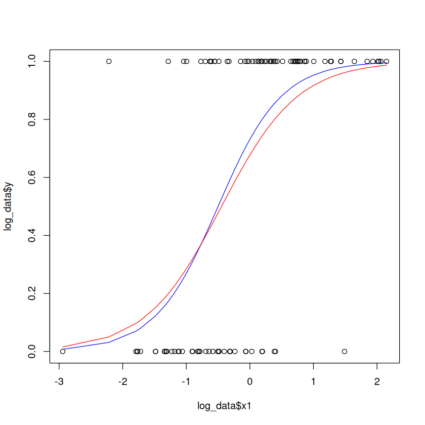

sim_log_data <- function(b1, b2, n, plot = TRUE, seed = TRUE) {
if (seed) set.seed(666)
x1 <- rnorm(n)
z <- b1 + b2 * x1
pz <- 1/(1 + exp(-z))
y <- rbinom(n, 1, pz)
if (plot) {
plot(x1, y, pch = 21, col = 2)
lines(sort(z), pz[order(z)], col = 'navy', lwd = 2)
}
list(y = y, x1 = x1, pz = pz)
}log_data <- sim_log_data(1, 2, 100)log_model <- glm(y~x1,
data=log_data,
family=binomial(link = 'logit'))
fit_vals <- fitted(log_model)
plot(log_data$x1, log_data$y)
lines(sort(log_data$x1), sort(log_data$pz), col='blue')
lines(sort(log_data$x1), sort(fit_vals), col = 'red')
summary(log_model)
Call:
glm(formula = y ~ x1, family = binomial(link = "logit"), data = log_data)
Deviance Residuals:
Min 1Q Median 3Q Max
-2.5511 -0.7616 0.3342 0.7572 2.4466
Coefficients:
Estimate Std. Error z value Pr(>|z|)
(Intercept) 0.7405 0.2696 2.747 0.00602 **
x1 1.6610 0.3534 4.699 2.61e-06 ***
---
Signif. codes: 0 ‘***’ 0.001 ‘**’ 0.01 ‘*’ 0.05 ‘.’ 0.1 ‘ ’ 1
(Dispersion parameter for binomial family taken to be 1)
Null deviance: 134.602 on 99 degrees of freedom
Residual deviance: 97.163 on 98 degrees of freedom
AIC: 101.16
Number of Fisher Scoring iterations: 5\[ p_i = \frac{1}{1 + \exp\{-(b_0 + b_1x_1)\}} \]
coefs <- coef(log_model)
b0 <- coefs[1]
b1 <- coefs[2]
# predecir la probabilidad cuando el predictor vale 1
# 1 / (1 + exp(-(b0 + b1)))
log_model
Call: glm(formula = y ~ x1, family = binomial(link = "logit"), data = log_data)
Coefficients:
(Intercept) x1
0.7405 1.6610
Degrees of Freedom: 99 Total (i.e. Null); 98 Residual
Null Deviance: 134.6
Residual Deviance: 97.16 AIC: 101.2# o lo que es lo mismo
p1=predict(log_model, newdata = data.frame(x1 = 1), type = 'response', se.fit = TRUE)
p1- $fit
- 1: 0.916940162083809
- $se.fit
- 1: 0.0395452558055165
- $residual.scale
- 1
# stepwise
library(MASS)
stepAIC(log_model)Start: AIC=101.16
y ~ x1
Df Deviance AIC
<none> 97.163 101.16
- x1 1 134.602 136.60
Call: glm(formula = y ~ x1, family = binomial(link = "logit"), data = log_data)
Coefficients:
(Intercept) x1
0.7405 1.6610
Degrees of Freedom: 99 Total (i.e. Null); 98 Residual
Null Deviance: 134.6
Residual Deviance: 97.16 AIC: 101.2